NHL Player Stats With Jared Flores Pt2 (Prep & Desktop)
Hi all, Welcome back to part II of creating an E2E process for NHL Player Stats. If you missed it, earlier this week Jared joined the site to talk about how he leveraged code prompts in ChatGPT to help him access the NHL API. It's a delight to be able to follow that blog up, with Jared showcasing the final prep & build of his NHL visualisation. Jared, over to you.Formatting the Data with Tableau Prep
Because of the formatting required, I took the output from the Python script and ran it through Prep to get my desired results. (You can see the files on Github)
Due to some performance issues and a ton of LOD calculations, I had to split up the flow into three parts. The first flow takes the play-by-play data and combines it with some tables that indicate each players current team. Players get traded throughout the year so I wanted to ensure I could show their stats based on their current team. The first flow takes the play-by-play data and combines it with some tables that indicate each players current team. Players get traded throughout the year so I wanted to ensure I could show their stats based on their current team. 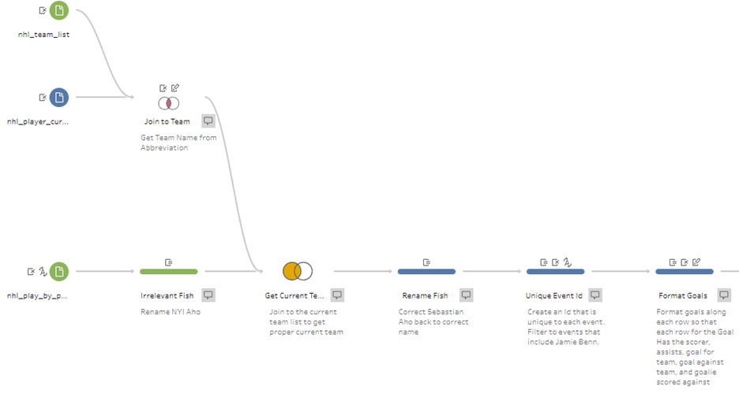 After combining the data and handling for a duplicate name (There are two players in the league named Sebastian Aho that I have to account for to properly join some external pieces of data), I create a Unique Event Id. 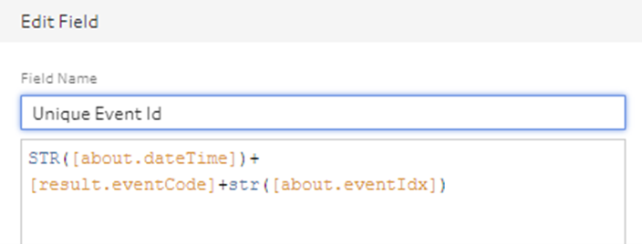 This allows me to ensure my LOD calculations are fixed to the proper event. Next, I start manually pivoting the data. You can see I made 25 changes just to get Goals and Assists pivoted 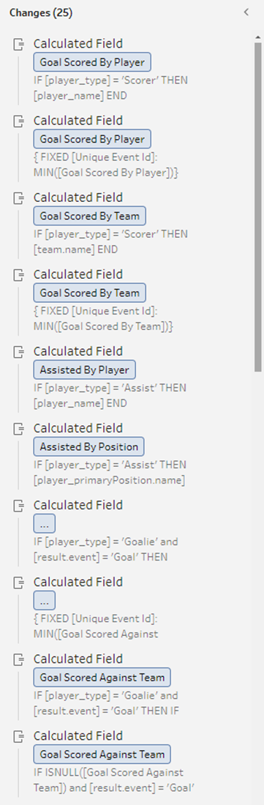 For the logic, I find the data point based on the player_type 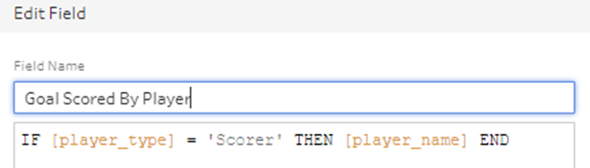 Now that I have the player who scored the goal, I can fix this value to every row that contains the same event id. 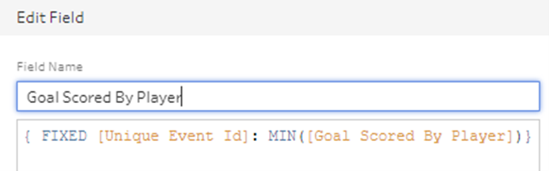 I repeat this for assists, faceoff winner and loser, penalty drawn by and taken by etc. Eventually, I am able to bring in some external data from moneypuck.com, a site that tracks several metrics around the effectiveness of shots taken. 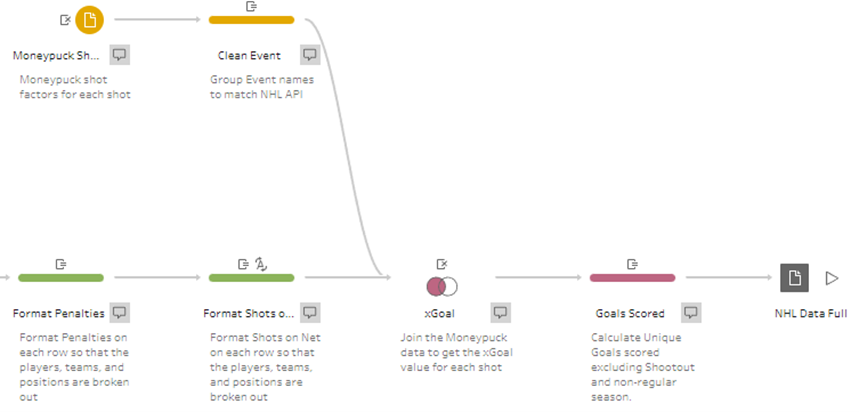 With this data, I can ensure the tooltip shows the expected goal value of every goal! While this Prep flow provides the main data set used for the majority of the dashboard, I also have some rankings listed near the top of the dashboard: 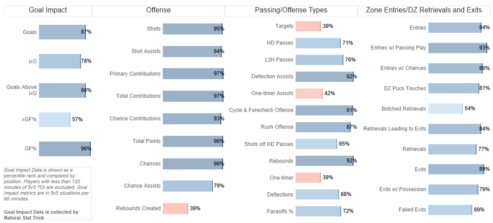 These metrics are coming from Natural Stat Trick and All Three Zones. Both projects track various player metrics to get a better understanding of how effective each player actually is outside raw goals and assists. There’s a ton happening in the Prep flow that combines the various data sources so I won’t go in detail, but look at this monster! 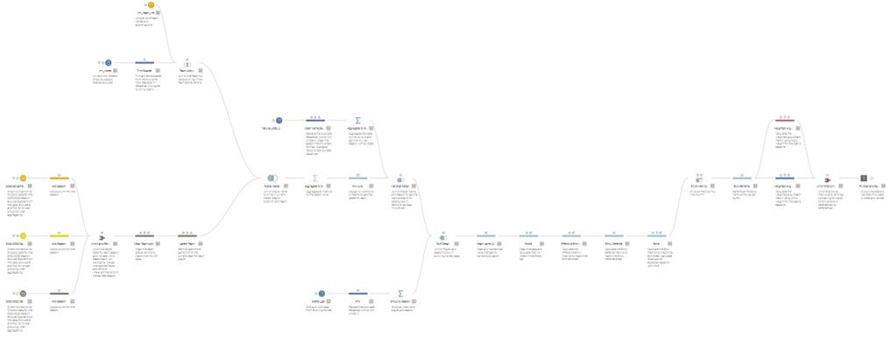 With all of this data, we’re able to finally visualize each player’s season and also how effective they are on ice. While I love data preparation, building Prep flows, and solving the data puzzle, building this visualization was one of my favorites. TABLEAU There were a few inspirations for the visualizations in the dashboard. The first was the NHL’s website 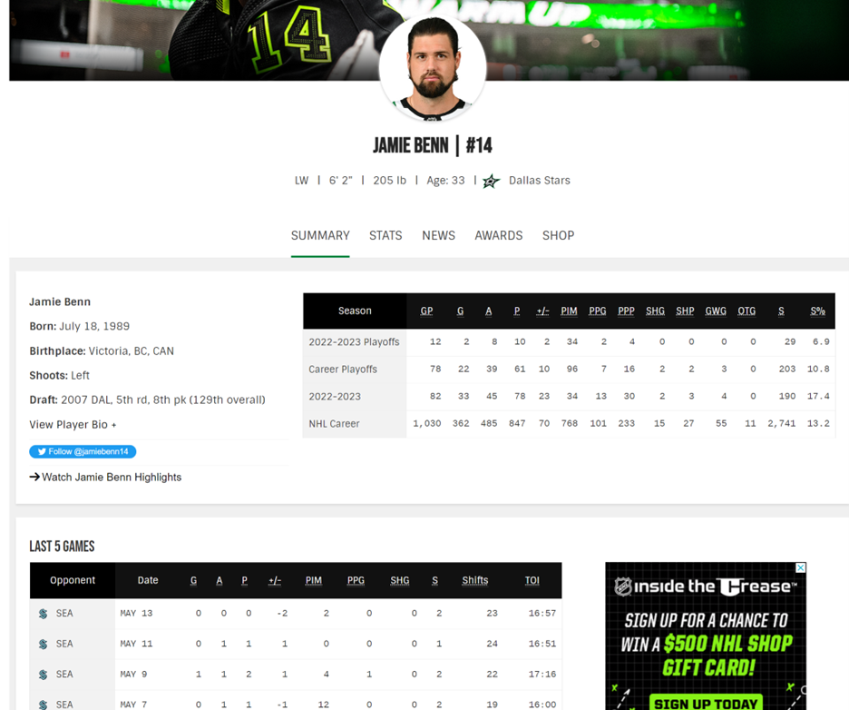 I wanted to take this view and enhance the information provided. I was also inspired by Meghan Chayka from Stathletes (@MeghanChayka) to incorporate the Faceoff chart: 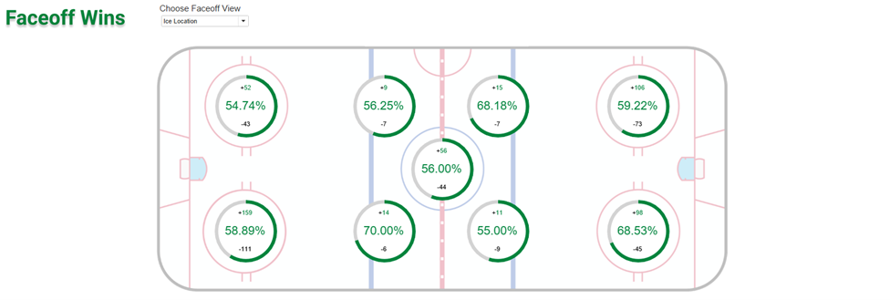 Since I was using a rather large table and incorporating Image Roles into the viz, I wanted to ensure I wasn’t including too many rows at once so I included the classic table pagination from Luke Stanke: 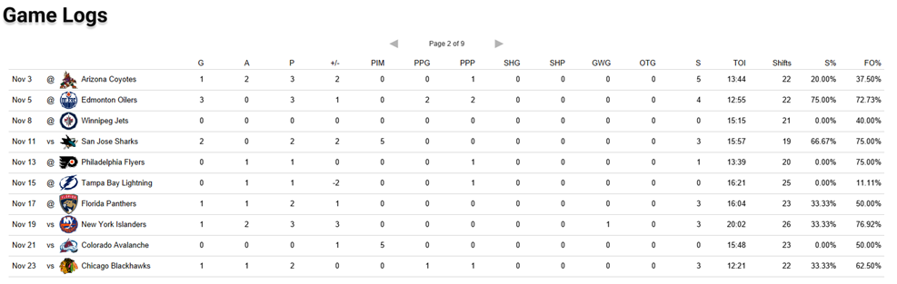 While there is a lot of information packed into the dashboard, each section essentially functions the same, so let’s dig into the summary and goals sections. 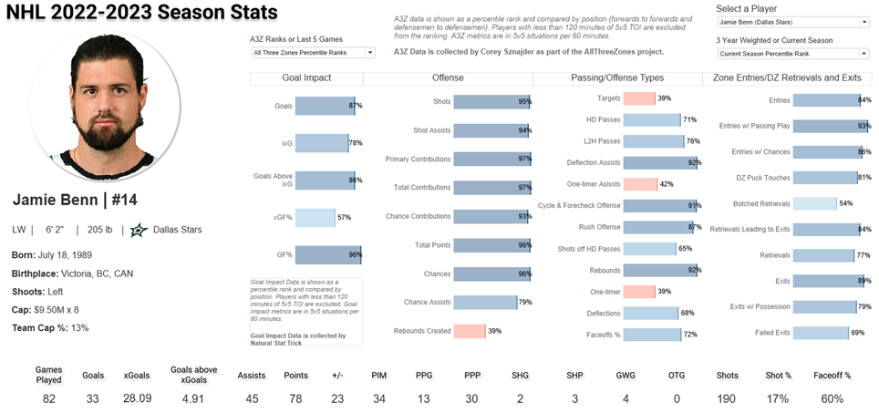 When you select a player from the top right corner, their image from the NHL website pops up along with some basic information about them (Name, Position, Height/Weight, Current Team, Birth Date and Place, and Cap Hit). You are able to see their base stats for the 2022-2023 season, similar to what we saw from the NHL website, but the percentile rankings also give a better picture into how the player actually performs compared to the league. 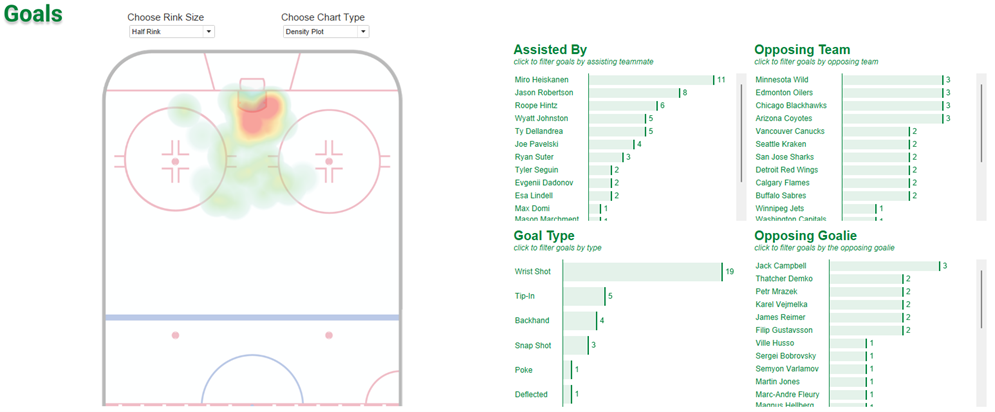 You’re given a few options on how to view the on-ice events. You can choose between half or full rink and density plot or circle plot. Here’s an example of the full rink and circle plot being selected: 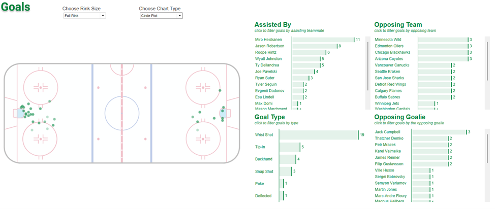 Since we manually pivoted all of the values in the Prep flow, we’re able to see for the selected player who is assisting them the most, what type of goals they’re scoring, and who they’re scoring against. We can even filter the events by any of the charts: 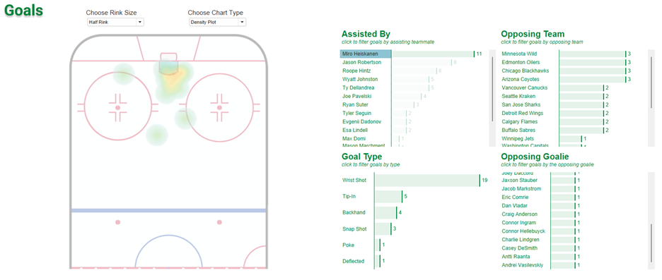 The remaining sections of the dashboard all operate in the same way so you can dig into a player’s assists, penalties, and hits. The faceoff chart is my absolute favorite. Even though it’s just donut charts, I love the way it looks against the ice map. 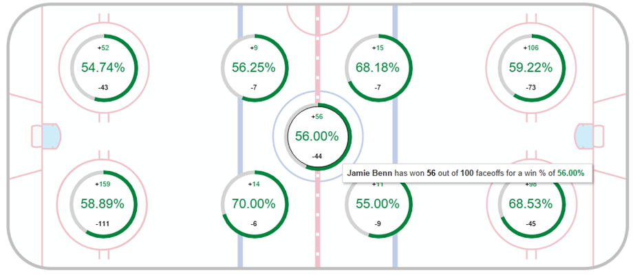 At the top of the dashboard, you can also take a look at their last five games: 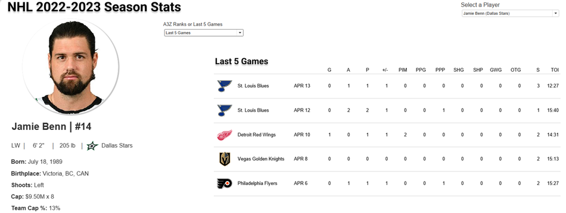 And there you have it! ChatGPT, Python, Tableau Prep, and Tableau Desktop all working together to create something with so much information packed in. I can’t wait to continue improving the dashboard! CJ Round-up: I really want to thank Jared for taking the time to piece this together, it's been on the wish list to have Jared discuss his NHL data prep for a while. Blogs like these just go to show the breadth of skills and tools now being used in data, and what we see online as finished visuals, we sometimes forget the leg work put in to shape the data in the way we need. Can't wait to see what's next for Jared, and love that he is carrying the torch not just for Tableau Prep but also making real headway in NHL analytics. LOGGING OFF, CJ